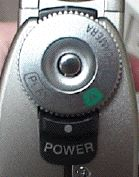

Return to the Digital
Camera Information page
Digital Camera Operation and Picture Download
The Sony digital cameras used in the Elementary Education Department
are model DSC-F1. Essentially, this is an optical lens attached
to a hard drive. Because of this configuration there are no disks
involved, and to download requires only the use of connection
cables from the camera to the computer and the download software.
To familiarize you with this process the steps of these operations
are listed:
Using the Camera
This camera is capable of a great many functions; due to room
constraints only basic operations will be described.
Taking Pictures
- To turn on the camera, move the function wheel to "A"
for automatic. This requires that you press the release button
located in the center of the function wheel while turning the
wheel itself.
|
 |
The control wheel is located on the right side of the camera
(note the lock release button in the center of the wheel).
|
- With the camera on, the LCD display activates and shows you
what the camera sees.
- When the image displayed in the LCD satisfactorily represents
the picture you want to capture, press the shutter button located
at the top of the camera.
- The LCD will momentarily freeze, a green dot will appear
on the screen and a display will appear indicating the number
of the picture as well as the total number of pictures the camera
can hold given its current configuration.
- To take closeups move the switch located on the top of the
lens labeled "Macro" to the macro position. The lens
must be within approximately 18 inches and no closer than 3 inches
when taking Macro images. Be sure to move the switch off of macro
when finished.
The Macro is located on top of the camera
Top of Page
Viewing Pictures
- Once pictures have been captured they can be viewed by moving
the function wheel to the "Play" position. This
requires that you press the release button located in the center
of the function wheel while turning the wheel itself.
- The images will display in the LCD viewer located on the
back of the camera.
- To view information about the picture number, press the "Display"
button located to the left of the display screen.
 |
 |
|
The left side of the camera |
The controls on the back of the camera |
- To move forward or backward through the images, use the forward
and back arrow buttons located to the left of the LCD viewer,
and at the very bottom of the column of buttons.
- To display the images on a monitor, plug the video cable
into the "Video Out" port located on the left side
of the camera and the other end of the cable to any video ready
monitor. The images will be displayed on both the monitor and
the camera's LCD viewer.
Top of Page
Downloading Pictures
Images on the camera can be used for demonstration purposes
while on the camera (as described above). However, there will
be times when images on the camera will need to be downloaded
to a computer for permanent storage, or for use in computer based
presentations, documents or as a part of a print based document.
To download one or more images:
- While the camera is turned off attach the power supply cable
to the "AC/DC Power" port on the left side of the camera.
- Then, attach the serial cable to the "Digital I/O"
port also on the left side of the camera. (In the Elementary
Education computer lab, these cables will be found attached to
machine 29).
- Turn on the camera to "M" for manual setting. Then
set the camera aside.
- Locate the download Sony Digital Camera utility software
on the computer (In the Elementary Computer lab, it is labeled
Sony Digital Camera utility on a shortcut on the desktop) and
launch it.
- The program will show a blank gray screen with a button bar
across the top of it.
- Click the button on the far left with the camera icon on
it.
- The screen will then show a spiral bound album icon with
a picture in the center.
- Double click on the album icon.
- The software will then open a series of thumbnail images
on the screen. The top of the album will tell you the total number
of pictures are on the camera and with 15 to a page, the total
number of album pages there are.
- To navigate through the pages, click the "+1" to
move forward a page and the "-1" to move backward a
page.
- To view a picture at full size, double-click on the image.
- To close a picture when it is open at full size, close its
window.
- To select a picture for saving, open it to full size.
- From the File menu, select "Save As…"
- Save it to your zip.
- Give it a name.
- Save it as a bitmap ".bmp" file.
(To insure that the images have been saved, it is advised that
you locate your disk icon, open it and confirm visually that
the pictures are on the disk -- they will be named "name.bmp".
- To save more pictures, repeat the above steps.
- If the images are on the disk, then click once on the utility
program "album" screen. This will once again activate
the program. You can then quit it by selecting File: Quit,
but don't forget to erase images!
Top of Page
Erasing Images on the Camera
- When you are done, delete the pictures by:
- "Selecting all…" from the Edit menu
- Then, select "Delete" from the Edit menu
- Exit the program
- Turn the camera off, replace the cables. Return the camera
to the lab asssistant.
- Move to your machine and follow the process for manipulating
the images and convert it/them to web ready format using PixWizard.
Top of Page